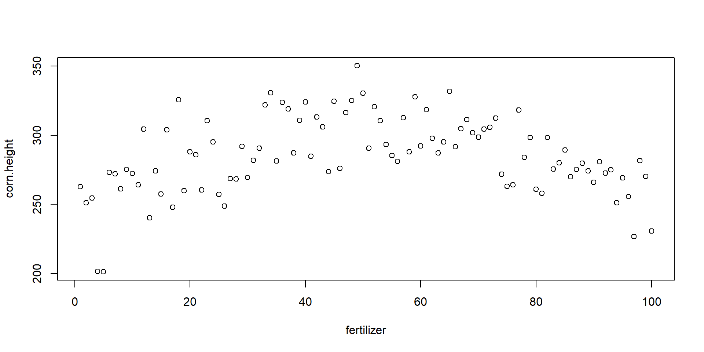
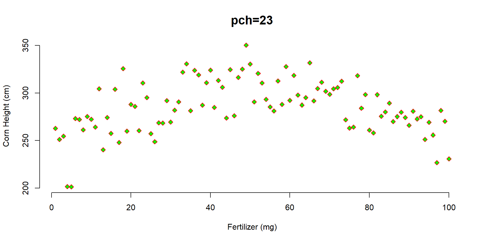
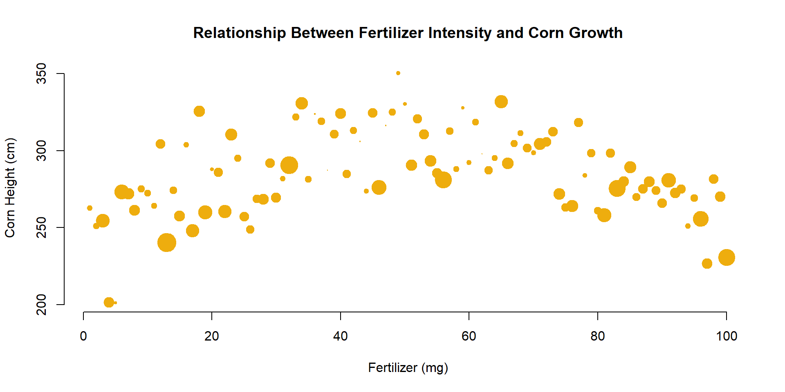
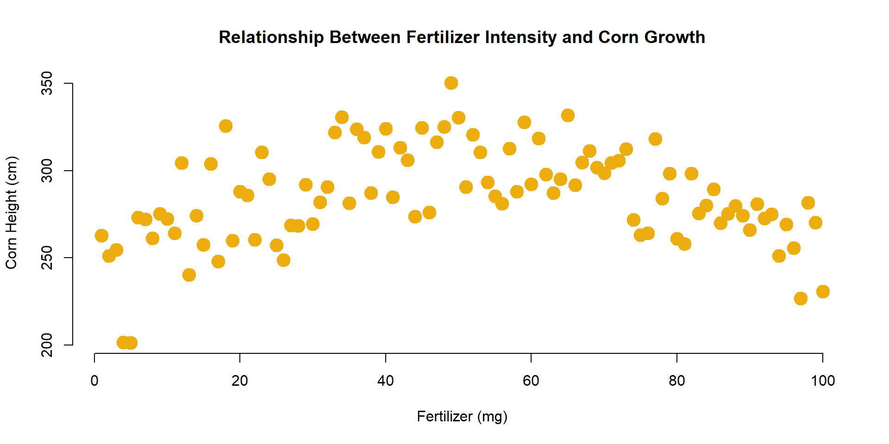
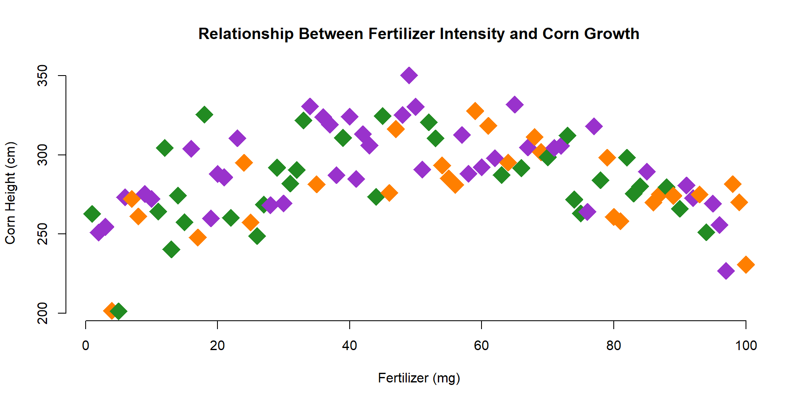
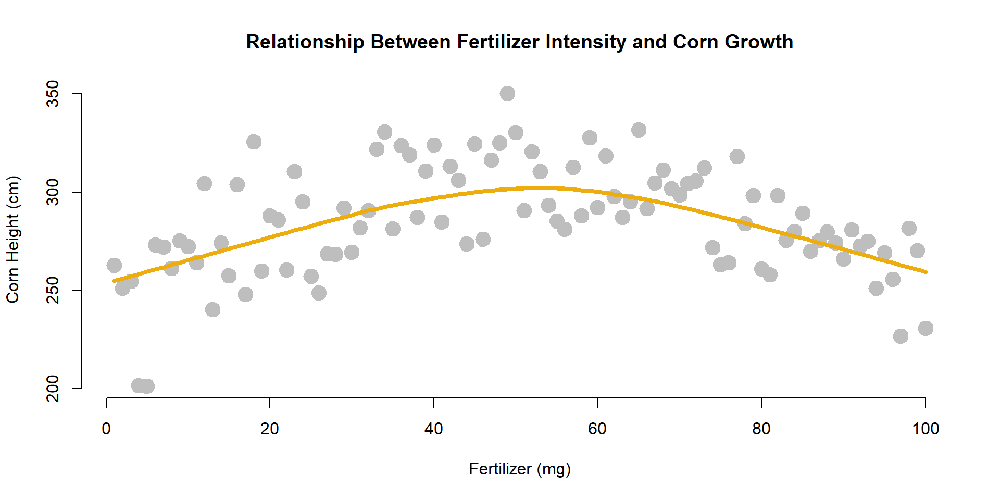
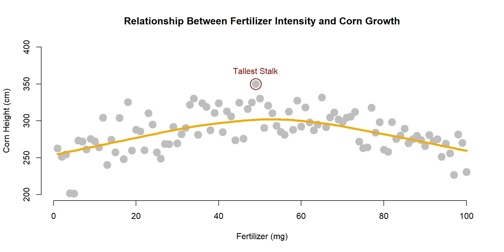

plot(
x=fertilizer, # data, if x is omitted then uses 1:length(y)
y=corn.height,
xlim=c(0,100), # min and max value of axes
ylim=c(200,350),
frame.plot=FALSE, # draw a box around the data?
col="steel blue", # color of the points
type="b", # points="p", lines="l", both="b", or none="n"
pch=19, # shape of points to plot
cex=2, # size of points
main="Plot Title", # title of your plot
xlab="Label for X", # axes labels
ylab="Label for Y",
cex.lab=1.5 # aspect ratio for axes labels
)21 The plot() Function
21.1 Key Concepts
We can create highly-customized scatterplots by mastering a few arguments:
- xlim, ylim - min and max values for the x and y plot range displayed
- frame.plot - change to FALSE to suppress a box drawn around the plot
- col - the colors of the plotting points
- type - the style of plot: points, lines, or both
- pch - the shape of the plotting points
- cex - the size of the plotting points
- main - the title of the plot
- xlab, ylab - axes labels
- cex.lab - the size of axes labels
These are some of the most useful arguments for the plot() function, but only a small sample of settings that you can change.
Try help( “par” ) for a more extensive list.
Mastering a few arguments in the plot() function allows for a lot of customization.

21.2 plot() Arguments
This lecture is a brief introduction to the plot() function in R, the work horse of the graphics package. We will introduce the flexibility of the fully-customizable graphics engine in R through the demonstration of some useful arguments.
To demonstrate these arguments we will use a simple dataset from a hypothetical farming experiment that examines the relationship between levels of new fertilizer under development and the height of the corn. To identify the optimal dosage of fertilizer to use, the experiment applies different levels to separate fields of corn, then measures the average final corn height at each dosage. The fields are scattered across three farms, and “moisture” represents the average Volumetric Water Content of the soil in each field.
You can load it as follows:
source( "https://raw.githubusercontent.com/DS4PS/Data-Science-Class/master/DATA/corn_stalks.R" )| fertilizer | corn.height | moisture | farm |
|---|---|---|---|
| 52 | 286 | 0.88 | A |
| 100 | 277 | 0.11 | C |
| 70 | 286 | 0.34 | A |
| 67 | 278 | 0.64 | C |
| 16 | 264 | 0.59 | B |
| 63 | 301 | 0.23 | B |
| 83 | 289 | 1.02 | C |
| 35 | 281 | 0.77 | C |
| 6 | 270 | 0.47 | B |
| 71 | 305 | 0.25 | B |
Change plot() arguments to see how they impact the graph.
In your R console type colors() to get a list of color names that R will recognize, or type demo("colors") to get a tour of some options.
dc_light_exercise_ex-01
21.3 The Default Scatterplot
The default plot() function requires an x-variable and y-variable and will create a scatterplot, adding axes and a title:
plot( x=fertilizer, y=corn.height )
Ok, so let’s improve upon this a bit. You can use the following arguments to customize the plot:
21.4 Titles
We can add better labels and a title with xlab=, ylab=, and main=.
plot(
x=fertilizer, y=corn.height,
xlab="Fertilizer (mg)",
ylab="Corn Height (cm)",
main="Relationship Between Fertilizer Intensity and Corn Growth"
)
We can also change their size with cex.lab= to control the size of the axes labels, and cex.main= to control the size of the title.
Note that all of the cex arguments are aspect ratios, meaning that the default value of 1 represents 100% and all other argument values are in relation to this default. A value of 2 means to increase the title to 200% of the size, an argument of 0.5 shrinks the title to half the original size.
plot(
x=fertilizer, y=corn.height,
xlab="Fertilizer (mg)",
ylab="Corn Height (cm)",
main="cex.lab=2",
cex.lab=2, # double the size of the axis labels
col.lab="steelblue" # change color of axis labels
)


21.5 Type of Plot
We can plot points, lines, or some combination of lines and points using the type= argument:
- “l” for lines
- “p” for points
- “b” for both points and lines
- “o” plots lines over points
- “n” for no lines or points
plot(
x=fertilizer, y=corn.height,
type="p",
main='type="p"',
cex.main=2,
xlab="",
ylab="",
col.axis="gray60",
frame.plot=F
)
21.6 Shape of Points
The argument pch determines the shape of the plot points. The numeric values 0 to 25 represent different default shapes. We can also use any number, letter, or symbol as a plotting shape.

Note that shapes 0 to 14 are hollow, 15 to 20 are solid, and 21 to 25 can also plot a background color specified by the bg= argument.
plot(
x=fertilizer, y=corn.height,
frame.plot=FALSE,
xlab="Fertilizer (mg)",
ylab="Corn Height (cm)",
main="pch=23", cex.main=1.5,
pch=23, col="red", bg="green"
)
21.7 Size of Points
We change the size of points using the cex= argument (pronounced “chex”). Similar to the title cex, it is an aspect ratio so cex=2 increases the size of the plotting points to 200% of the original, and cex=0.5 scales the size down to half of the original size.
plot(
x=fertilizer, y=corn.height,
col="darkgoldenrod2",
pch=19,
cex=2, # scale points to 200% normal size
xlab="", ylab="", las=1,
main="cex=2", cex.main=2,
frame.plot=FALSE
)


The cex= argument is also useful for incorporating a third numeric variable into the analysis. For example, perhaps we want to include the average moisture levels of the soil for each field. When we use a numeric vector like this with the cex= argument, instead of a single constant, the plot will adjust the size of observation based upon its measured moisture level. Since moisture values are between 0 and 1, I have scaled them by 3 to ensure the points are large enough to see.
plot(
x=fertilizer, y=corn.height,
col="darkgoldenrod2",
cex=3*moisture,
pch=19, frame.plot=F,
xlab="Fertilizer (mg)",
ylab="Corn Height (cm)",
main="Relationship Between Fertilizer Intensity and Corn Growth"
)
21.8 Colors
The argument col= determines the color of plot points. To see a list of preset options check out:
List of default named colors in R
plot(
x=fertilizer, y=corn.height,
col="darkgoldenrod2", pch=19, cex=2,
xlab="Fertilizer (mg)",
ylab="Corn Height (cm)",
main="Relationship Between Fertilizer Intensity and Corn Growth",
frame.plot=FALSE
)
In the example above we specified a single color for all of our corn heights. If we want to incorporate a third categorical variable in our analysis, we can use a factor in our dataset as the value we pass to the col= argument. For example, perhaps we want to indicate which farm each field belongs to in the graph.
plot(
x=fertilizer, y=corn.height,
pch=19, cex=2,
col=farm,
xlab="Fertilizer (mg)",
ylab="Corn Height (cm)",
main="Relationship Between Fertilizer Intensity and Corn Growth",
frame.plot=FALSE
)
Note that “farms” has to be a factor in order to use it in the col= argument. In this example, the farms have labels of “A” to “C”.
levels( farm )[1] "A" "B" "C"You might be curious how R selected the colors for the three farms. The palette() function will print the default values that R uses for categorical variables:
palette()[1] "black" "#DF536B" "#61D04F" "#2297E6" "#28E2E5" "#CD0BBC" "#F5C710"
[8] "gray62" You can see that the first three are the colors used in the graph above. Since there are only 8 default values, if your categorical variable has more than 8 levels it will start to recycle colors.
Perhaps you don’t like the default values. You can select your own by passing color names to the palette() function as follows:
palette( c("forestgreen","darkorange1","darkorchid") )
plot(
x=fertilizer, y=corn.height,
pch=18, cex=3,
col=farm,
xlab="Fertilizer (mg)",
ylab="Corn Height (cm)",
main="Relationship Between Fertilizer Intensity and Corn Growth",
frame.plot=FALSE
)
21.9 Looking Ahead
In the next section, we will add some lines, points, and text to the plot.
We can add lines to highlight trends (a regression is just the average of Y at each level of X).
plot(
x=fertilizer, y=corn.height,
xlab="Fertilizer (mg)",
ylab="Corn Height (cm)",
main="Relationship Between Fertilizer Intensity and Corn Growth",
pch=19,
col="gray",
cex=2,
bty="n"
)
lines( lowess( fertilizer, corn.height ), col="darkgoldenrod2", lwd=4 )
In order to add narrative to your graphs, you can add points and text.
The points() function operates with basically the same parameters as the plot() function. The text() function uses the same X and Y coordinates, but you also have to add an argument for the text that you want added to the plot.
Let’s highlight the tallest corn stalk as an example.
tallest.x <- fertilizer[ which.max( corn.height ) ]
tallest.y <- corn.height[ which.max( corn.height ) ]
points( x=tallest.x, y=tallest.y, cex=3, lwd=1.5, col="firebrick4" )
text( x=tallest.x, y=tallest.y,
labels="Tallest Stalk",
pos=3, offset=1, col="firebrick4" )